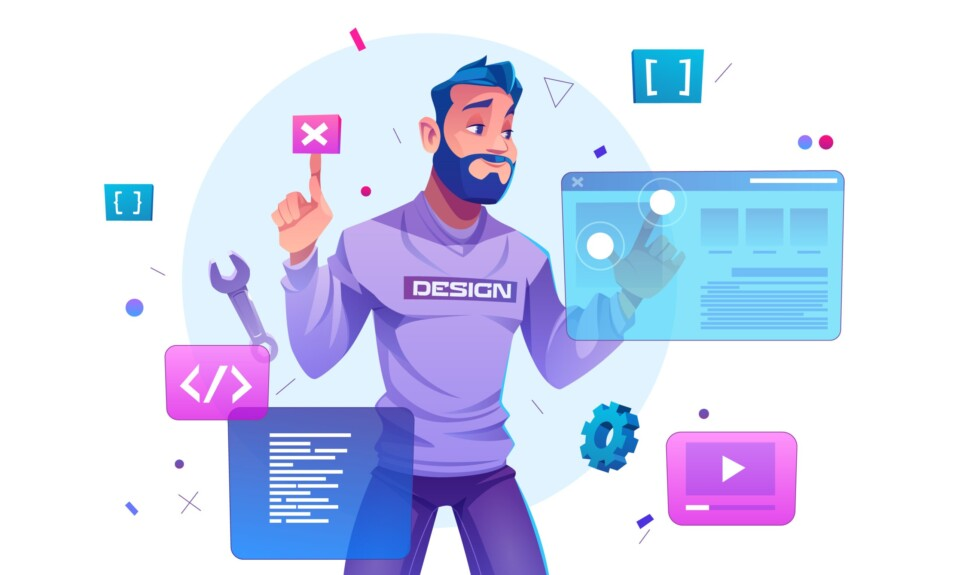

¿Qué es la WEB 3.0?
La Web 3.0 es la tercera generación de servicios de Internet para páginas web y aplicaciones. Se centrará en el uso de una comprensión de datos basada en máquinas para proporcionar una Web semántica y datificada. El objetivo final de la Web 3.0 es crear sitios web más inteligentes, conectados y abiertos.
Todavía no está implementada, por lo que no existe una definición clara. Para hacernos una idea, hacer la transición de la web original, de la Web 1.0 a la Web 2.0, llevó más de diez años. Dicho esto, se espera que lleve un tiempo parecido, si no más, implementar y remodelar totalmente la web con la 3.0.